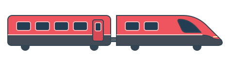
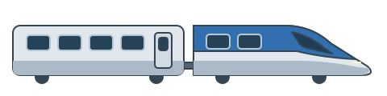
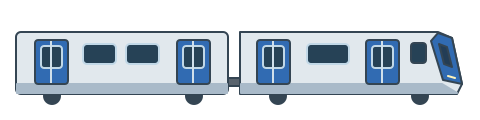

봄 · ITX-마음
빨간 차체와 둥근 앞머리

아래: 실제 높이 40px같은 크기와 바닥선으로 맞춘 투명 SVG · 오른쪽 진행 · 로고 없음
빨간 차체와 둥근 앞머리

아래: 실제 높이 40px하늘색 차체와 노란 물결
아래: 실제 높이 40px은색 차체와 파란 유선형 앞머리

아래: 실제 높이 40px각진 차체와 파란 출입문

아래: 실제 높이 40px같은 계절을 다시 누르면 재생해요. 기기의 움직임 줄이기를 켜면 열차가 가운데에 정지해요.